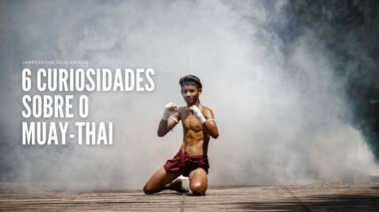
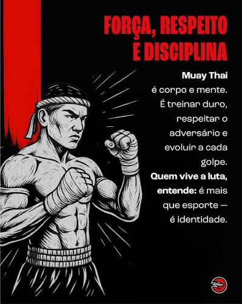

Curiosidades

O Muay Thai é uma arte marcial originária da Tailândia, conhecida como a Arte das Oito Armas, pois utiliza punhos, cotovelos, joelhos e canelas. Antes das lutas, os atletas podem realizar uma dança tradicional chamada Wai Kru Ram Muay, que representa respeito aos mestres e à cultura tailandesa. Outra curiosidade é que, nas lutas tradicionais, músicas típicas acompanham os combates. Atualmente, o Muay Thai é praticado em diversos países e é conhecido por desenvolver força, resistência, disciplina e concentração.
Regras

O Muay Thai possui regras para garantir a segurança e a organização das lutas. Os atletas podem utilizar socos, chutes, joelhadas e cotoveladas. São proibidos golpes como cabeçadas, mordidas e ataques aos olhos. Os lutadores devem usar equipamentos de proteção, como luvas e protetor bucal. As lutas são divididas em rounds e podem terminar por nocaute, decisão dos juízes ou desclassificação. O respeito ao adversário e às regras é fundamental nesse esporte.
Team USA Muaythai – https://teamusamuaythai.org
ONE Championship – https://www.onefc.com
WMC – https://wmcmuaythai.org
IFMA – https://www.ifmamuaythai.org